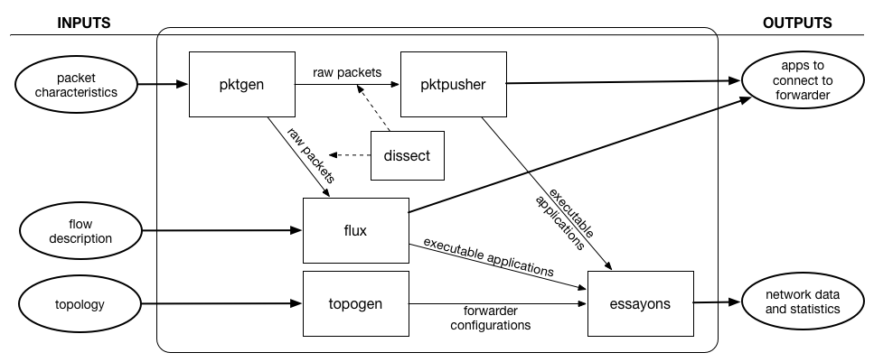

This page describes the tools I have built as part of my academic research
and development for CCN. Some of them are usable and some of them are still
a work in progress. For the most part, they have aided me in my research to perform
tasks such as packet generation and inspection, topology management, and forwarder testing
and development.
These tools work together according to the following diagram.

The following list briefly describes each of the tools and their respective use in the suite.
-
pktgen: This is a tool to generate
CCNx packets (e.g., interests and content objects) for use in testing forwarders.
The goal is to enable packets to be (deterministically and) programmatically
generated using simple functional semantics to allow for repeatable experimentation.
It can generate single packets or packet pairs (e.g., interests and matching
content objects).
-
flux: This is a Python framework for
creating executable packet flows so that application traffic patterns can codified
in a high-level language. The goal is to allow application behavior with the network to
be assessed without dealing with any of the application-layer concerns.
This is done by mocking application logic.
-
topogen: This is a tool to convert CCN
application and network topologies expressed as DOT graphs to forwarder configuration
files to replicate the actual scenario. This is used to run real forwarders on real
hardware transferring real packets -- it is not for simulation purposes.
-
pktpusher: This is a tool used
to test forwarders. It consists of two programs -- a sender (consumer) and a
receiver (producer) -- that interact by sending interests and the respective content
objects. The preliminary version uses primitive techniques to control the flow
of interests from the sender. The receiver implements a basic content-addressable repository
(hash table) that is used to serve content to the sender in response to an interest.
-
dissect: This is a tool to inspect CCN
packets in raw form. It also features the ability to export packets to alternative
encodings if necessary, e.g., JSON. It is written in C to enable portability
and re-use across other projects.
-
essayons: This is an experimentation tool that
uses forwarder configurations and executable applications to create a topology on real systems, run
an experiment, and collect output data about the experiment.